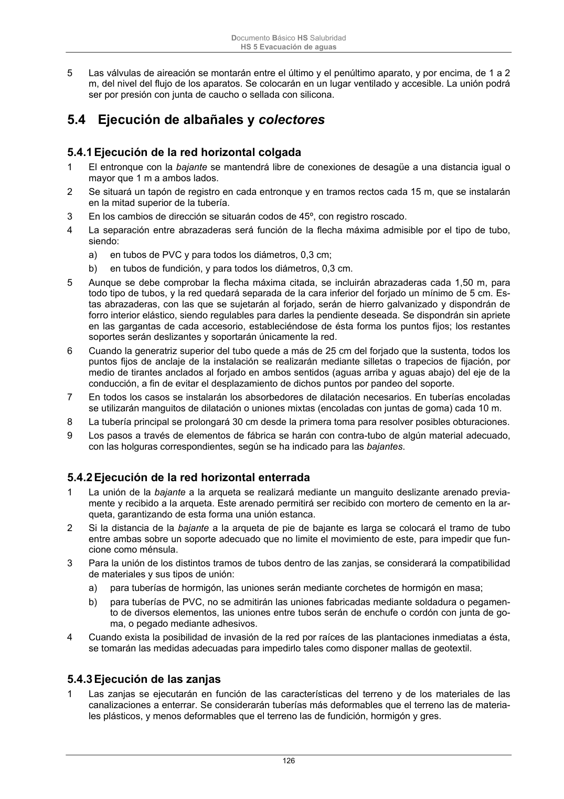

DB-HS Salubridad · edición 2022-06-14 · capa oficial
Documento DB-HS-oficial · SHA-256 del PDF 68df3caacc95f71aee2ec1ba7b2c65ae66155c21e3a8785521b8fdd4fd640d3b
Copia fiel del PDF fuente · Fuente oficial
Ficha de la disposición en la fuente oficial
Formatos: JSON del segmento · Markdown
5.4 Ejecución de albañales y colectores 5.4.1 Ejecución de la red horizontal colgada 5.4.1 Ejecución de la red horizontal colgada 1 El entronque con la bajante se mantendrá libre de conexiones de desagüe a una distancia igual o mayor que 1 m a ambos lados. 2 Se situará un tapón de registro en cada entronque y en tramos rectos cada 15 m, que se instalarán en la mitad superior de la tubería. 3 En los cambios de dirección se situarán codos de 45º, con registro roscado. 4 La separación entre abrazaderas será función de la flecha máxima admisible por el tipo de tubo, siendo: a) en tubos de PVC y para todos los diámetros, 0,3 cm; b) en tubos de fundición, y para todos los diámetros, 0,3 cm. 5 Aunque se debe comprobar la flecha máxima citada, se incluirán abrazaderas cada 1,50 m, para todo tipo de tubos, y la red quedará separada de la cara inferior del forjado un mínimo de 5 cm. Es- tas abrazaderas, con las que se sujetarán al forjado, serán de hierro galvanizado y dispondrán de forro interior elástico, siendo regulables para darles la pendiente deseada. Se dispondrán sin apriete en las gargantas de cada accesorio, estableciéndose de ésta forma los puntos fijos; los restantes soportes serán deslizantes y soportarán únicamente la red. 6 Cuando la generatriz superior del tubo quede a más de 25 cm del forjado que la sustenta, todos los puntos fijos de anclaje de la instalación se realizarán mediante silletas o trapecios de fijación, por medio de tirantes anclados al forjado en ambos sentidos (aguas arriba y aguas abajo) del eje de la conducción, a fin de evitar el desplazamiento de dichos puntos por pandeo del soporte. 7 En todos los casos se instalarán los absorbedores de dilatación necesarios. En tuberías encoladas se utilizarán manguitos de dilatación o uniones mixtas (encoladas con juntas de goma) cada 10 m. 8 La tubería principal se prolongará 30 cm desde la primera toma para resolver posibles obturaciones. 9 Los pasos a través de elementos de fábrica se harán con contra-tubo de algún material adecuado, con las holguras correspondientes, según se ha indicado para las bajantes.
